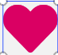
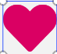

Se puede datar el inicio de su construcción a principios del último tercio del siglo XVI, sobre una primitiva iglesia gótica que había sido construida entre finales del siglo XIV y principios del XV. La edificación de este templo responde a una doble funcionalidad: religiosa y defensiva. Los continuos ataques de la piratería berberisca que desde las costas de África castigaron gravemente y a menudo los pueblos de litoral valenciano. Arquitectónicamente la iglesia consta en la actualidad de dos partes bien diferenciadas: la primitiva, del siglo XVI, y una serie de ampliaciones que van desde el siglo XVIII a nuestros días.